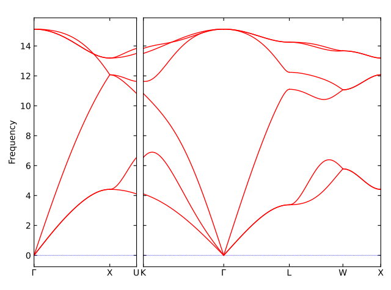
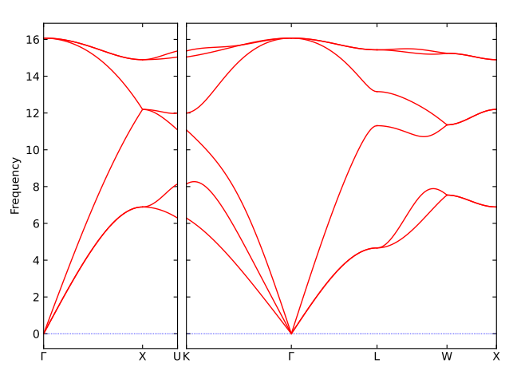

CLFF: phonon calculation¤
clff_phonon is a command-line tool designed to perform the phonon calculation. The following tasks is run automatically without the need for any user intervention:
- Build atomic structures
- Generate DFT/MD codes to optimize atomic structures
- Submit the optimization jobs to the clusters, monitor the job status, and get back the DFT calcualation results
- Generate supercells with displacements
- Generate DFT/MD codes to compute atomic forces
- Compute the phonon band structure, phonon density of states, and other phonon-related properties.
PARAM.yml: The parameters of the generator.MACHINE.yml: The settings of the machines running the generator's subprocesses.
The above clff_phonon command is all needed to obtain, for example, the phonon band structure of Silicon as following figures:
- Phonon band structure of bulk Silicon using DFT calculator

- Phonon band structure of bulk Silicon using MD calculator with a classical forcefield

The results from our calculations are strongly consistent with the reference phonon band structure of Silicon reported in the literature.
-------------------------------- CLFF --------------------------------
Version: 0.1.dev409+g177de1d
Path: D:/work/code_hub/clff
---------------------------- Dependencies ----------------------------
numpy 1.26.4 C:/conda/envs/py13/Lib/site-packages/numpy
scipy 1.14.1 C:/conda/envs/py13/Lib/site-packages/scipy
ase 3.23.1b1 C:/conda/envs/py13/Lib/site-packages/ase
thkit 0.1.dev122 D:/work/code_hub/thkit
phonopy 2.29.1 C:/conda/envs/py13/Lib/site-packages/phonopy
----------------------- Author: C.Thang Nguyen -----------------------
----------------- Contact: http://thangckt.github.io/email -----------------
___ __ ____________
/ | / / / ____/ ____/
/ /| | / / / /_ / /_
/ ___ |/ /___/ __/ / __/
/_/ |_/_____/_/ /_/
INFO: START PHONON CALCULATION
INFO: --------------- stage_00: make_structure ------------------
The directory `Si_bulk_diamond_01x01x01` already existed. Select an action: [yes/backup/no]?
Yes: overwrite the existing directory that continue or update uncompleted tasks.
Backup: backup the existing directory and perform fresh tasks.
No: skip and exit.
Your answer (y/b/n): y
Overwrite the existing directory
INFO: Working on the path: Si_bulk_diamond_01x01x01/00_make_structure
INFO: Build structures from scratch
INFO: --------------- stage_01: relax_initial_structure ----------
INFO: Optimize the structures
INFO: No DFT task is found. Skip the DFT calculation.
INFO: --------------- stage_02: strain_and_relax ------------------
INFO: Relax the scaled structures
INFO: No task.
INFO: --------------- stage_03: compute_force --------------------
INFO: Running DFT jobs... be patient
Remote host: some_IP_address
Remote path: /uwork/user01/work/w24_clff_job
Log file: logs/20241020_220540_dispatcher.log
INFO: -------------------- stage_04: compute_phonon --------------
INFO: FINISHED !
Parameters¤
The parameters of the generator are stored in a YAML/JSON/JSONC file. Here is an example of the parameters:
stages:
- make_structure # build initial atomic structures
- relax_initial_structure # relax initial structures
- strain_and_relax # scale and relax the structures
- compute_force # compute the force
- compute_phonon # post_process by phonopy
structure: # atomic structure information
# from_extxyz: ["path/to/extxyz_file"] # list-of-paths to the EXTXYZ files to be used as the initial structure. If provided, the structure will be read from the file, and the other structure parameters will be ignored.
from_scratch: # build the structure from scratch
structure_type: "bulk" # bulk, molecule, surface,
chem_formula: "Si" # chemical formula/element. e.g., "H2O", "Mg2O2", "Mg",
pbc: [1, 1, 1]
ase_arg:
crystalstructure: "diamond"
a: 5.43
# strain: # scale and perturb the structure
# strain_x: [0.5,1.5] # scale the structure in x-direction
# # strain_y: [0.700] # scale the structure in y-direction
# # strain_z: [0.700, 0.800] # scale the structure in z-direction
phonon: # phonon calculation
supercell_matrix: [2, 2, 2] # 1x3 array
displacement: 0.03 # small displacement in Angstrom
phonopy_arg: # Accept all the phonopy parameters
is_symmetry: True # use symmetry
symprec: 1e-5 # symmetry precision
# nac: False # non-analytical correction
compute: # properties need to compute from the phonon calculation
mesh: [20, 20, 20] # Set sampling mesh (set_mesh) in reciprocal space
band_structure: # phonon band structure
path_str: 'auto' # 'GXU,KGLWX' or 'auto' or None # k-path for band structure. Choices: input_str, 'auto', None. If not set (None), k-path is genrated using `ase`. If set 'auto', k-path is generated using `seekpath`.
npoints: 50 # number of k-points
dos: True # phonon density of states
pdos: True # phonon projected density of states
thermal_properties: # phonon thermal properties
t_min: 0.0 # minimum temperature
t_max: 1000.0 # maximum temperature
t_step: 10.0 # temperature step
calculator: "lammps" # choices: 'lammps', 'gpaw'. Calculator to calculate atomic forces. Default: 'lammps'
relax_supercell: True # relax the initial structure using the supercell. Default: False. This is useful when compute with clssical MD, which can avoid the PBC effect.
# dft: # parameters for DFT calculation
# gpaw_calc: # accept GPAW parameters
# mode:
# name: 'pw' # use PlaneWave method energy cutoff in eV
# ecut: 500
# xc: "PBE" # exchange-correlation functional
# kpts: {"density": 6, "gamma": False} # if not set `kpts`, then only Gamma-point is used
# optimize: # parameter to optimize the structure by DFT/MS (relax_type: 'opt')
# fmax: 0.02 # force convergence criteria
md: # parameters for MD calculation
file_potentials: ["SiC.tersoff"] # path to the potential file
lammps_arg: # accept LAMMPS parameters
pair_style: ["tersoff"] # LAMMPS pair_style
pair_coeff: ["* * ../SiC.tersoff Si"] # LAMMPS pair_coeff, don't input atom names here
minimize: # parameter to minimize the structure by MD (relax_type: 'min')
ftol: 1e-12 # force convergence criteria
etol: 0 # energy convergence criteria
# dmax: 0.001 # maximum distance for line search to move (distance units). Default: 0.01
Context options¤
When the output directory already exists, the generator will ask for the user's choice to proceed. The options are:
Yes: overwrite the existing directory and continue.Backup: backup the existing directory and continue.No: skip the building process and exit.
Yes: is recommended. With this option, the generator will
- Overwrite and continue in the existing directory
- Automatically select the unLABELED configurations to run DFT calculations, avoi running DFT for LABELED configurations.
- This is the best way to continue the previous uncomplishness or update some more sampling options.
Machines¤
The settings of the machines running the generator's subprocesses are stored in a YAML/JSON/JSONC file. Here is an example of the machine settings:
dft:
command: "mpirun -np $NSLOTS gpaw"
machine:
batch_type: SGE # Supported systems: SGE, SLURM, PBS, TORQUE, BASH
context_type: SSH # Supported contexts: SSH, Local
remote_root: /path/of/project/in/remote/machine
remote_profile:
hostname: some_IP_address # address of the remote machine
username: little_bird # username to login the remote machine
password: "123456" # password to login the remote machine
port: 2022 # port to connect the remote machine
timeout: 20 # timeout for the SSH connection
execute_command: "ssh cluster" # command to execute the SSH connection
resources:
queue_name: "lion-normal.q"
cpu_per_node: 12
kwargs:
pe_name: lion-normal
job_name: zfp
custom_flags:
- "#$ -l h_rt=168:00:00"
module_list:
- conda/py11gpaw
source_list:
- /etc/profile.d/modules.sh
envs:
OMP_NUM_THREADS: 1
OMPI_MCA_btl_openib_allow_ib: 1
# OMPI_MCA_btl: ^tcp